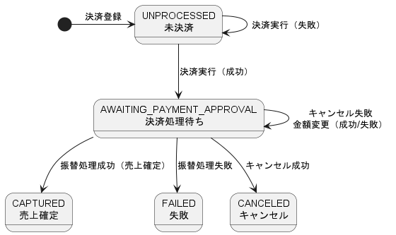

查看支付状态
以下介绍银行账户自动扣款交易的状态。每笔交易的状态按下方状态转换图变化。
※银行账户自动扣款（1、5、20、26 日）与银行账户自动扣款（5、6、23、27 日）的状态相同。
交易状态列表

| 状态名称 | 状态 | 说明 |
|---|---|---|
| 未支付 | UNPROCESSED | 交易已登记，扣款尚未完成。 |
| 等待支付处理 | AWAITING_PAYMENT_APPROVAL | 正在等待 fincode 和金融机构处理并批准扣款。 |
| 销售额已确认 | CAPTURED | 销售额已经确认。 进入此状态时，本笔交易的扣款金额将计入当期的销售额。 |
| 已取消 | CANCELED | 交易已取消。 |
| 失败 | FAILED | 因余额不足等原因导致扣款失败。 可通过扣款结果的 Webhook 通知，或获取支付信息返回的 result_code了解具体原因。※ |
※如果 result_code 的值为2, 3, 7, 8, 9, E, N中的任意一个，则本次支付所用的支付方式也会变为失敗（FAILED）状态。
详情请参阅使用支付方式 API 处理银行账户自动扣款。
交易状态转换
“－”表示没有对应的结果或操作。
| 操作 | 操作结果 | 操作前状态 | 操作后状态 |
|---|---|---|---|
| 登记支付 | 成功 | － | 未支付 |
| 执行支付 | 成功 | 未支付 | 等待支付处理 |
| 失败 | 未支付 | 未支付 | |
| 已处理扣款 | 成功 | 等待支付处理 | 销售额已确认 |
| 失败 | 等待支付处理 | 失败 | |
| 变更金额 | 成功 | 等待支付处理 | 等待支付处理 |
| 失败 | 等待支付处理 | 等待支付处理 | |
| 取消 | 成功 | 等待支付处理 | 已取消 |
| 失败 | 等待支付处理 | 等待支付处理 |
各交易状态下可用的操作
“－”表示没有对应的结果或操作。
| 状态 ＼ 操作 | 执行支付（即时销售） | 取消 | 变更金额 |
|---|---|---|---|
| 未支付 | ○ | － | － |
| 等待支付处理 | － | ○ | ○ |
| 销售额已确认 | － | － | － |
| 已取消 | － | － | － |
| 失败 | － | － | － |